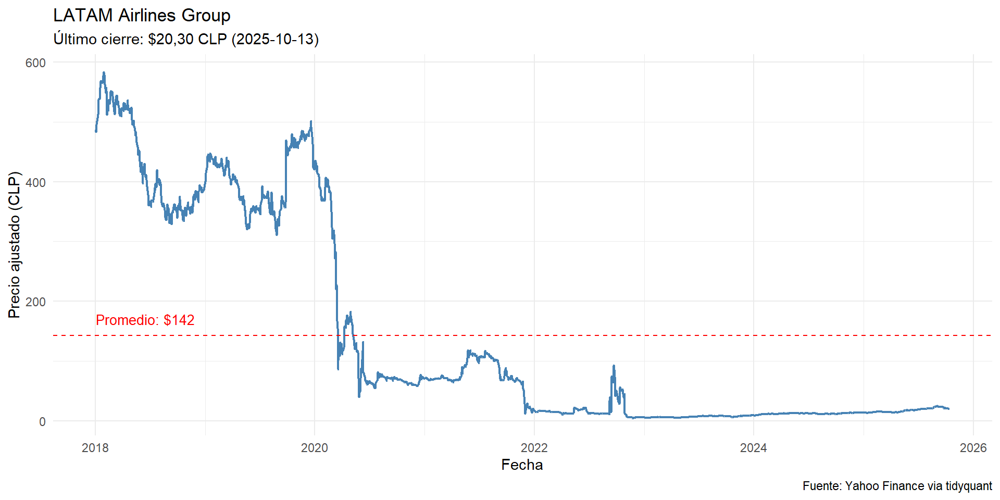
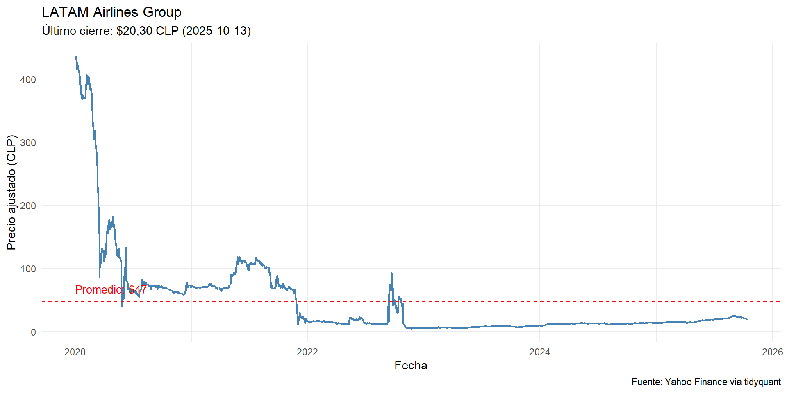
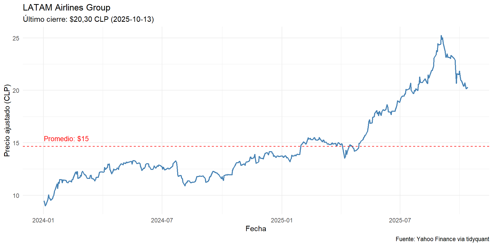

Clase 01 – El valor estratégico de los datos y fundamentos para entender la IA
2025-10-14
Experiencia, educación, etc.
Por ejemplo, en el ámbito personal, ¿cómo decidir entre una oferta de trabajo que implica un mayor salario pero requiere re localizarse o una oferta con menor salario pero un mejor equilibrio entre la vida laboral y personal?
La dualidad acá está entre tomar una decisión en base a nuestro instinto o en base a un sistematización de puntos a favor o puntos en contra. Esto independiente del método o metodología.
Para esto, debemos desarrollar un framework orientado a la toma de decisiones; en la actualidad se habla de decision science, como el campo multipdisciplinario orientado a desarrollar un enfoque sistemático y orientado en datos (data-driven) para resolver problemas y optimizar desempeño y resulados.
Como áreas relacionadas se encuentran las matemáticas, estadística, psicología, economía, ciencias de la computación, etc.
El punto principal se basa en tomar decisiones informadas; una herramienta común a las ciencias es el método científico.
Corresponde a la metodología aplicada en ciencias orientada a enteder la realidad y generar nuevos conocimientos en base a la observación sistemática, medición y experimentación en base al análisis y formulación de hipótesis. Se puede desconmponer en las siguiente etapas:
En este sentido, desicion science busca tomar los aspectos positivos del conocimiento científico en el ambito de la toma de decisiones para organizaciones.
Podemos afirmar lo siguiente: “Cada decisión en salud, finanzas o negocios se basa en una predicción — explícita o implícita. El valor/desafío está en hacerla con evidencia”.
El enfoque de decision science plantea el siguiente framework:
Se debe tener claridad en la toma de decisiones (no desarrollar/invertir en nada que no tenga sustento en datos), identificar tendencias y generar predicciones para reducir/interiorizar la incertidumbre.
Un warning relevante es la necesidad de estar siempre atentos a los posibles sesgos inconscientes dentro den la toma de decisiones:
¿Qué se prefiere?
Resultado:
Se asume que siempre estamos en un contexto de racionalidad perfecta, lo que implica la existencia de información completa y la no existencia de sesgos ni emociones. A pesar de esto, en la realidad, se toman decisiones en racionalidad incompleta o limitada:
Recuperada en: https://www.nydailynews.com/2013/09/16/hamill-bill-de-blasio-says-bill-bratton-on-short-list-to-be-police-commissioner
En un caso simple, podriamos pensar en el promedio de días que pasa cada paciente por alguna patología en particular.
Tenamos los siguientes datos de altas pacientes con neumonía y queremos predecir el tiempo promedio de hospitalización en días:
Acá la censura corresponde a los pacientes que no han sido dados de alta (alta = 0).
| Total | Eventos_DELTA1 | Censuras_DELTA0 | Proporcion_evento |
|---|---|---|---|
| 20 | 15 | 5 | 0.75 |
| n | min | mean | mean_obs | sd | median | max |
|---|---|---|---|---|---|---|
| 20 | 1 | 6.1 | 4.8 | 3.161 | 6 | 12 |
Veamos el análisis de Weibull para estos datos:
| Caso | shape (k) | scale (λ) |
|---|---|---|
| Con censura | 1.5848 | 7.8569 |
| Caso | Mediana | Media | p=0.1 | p=0.5 | p=0.9 |
|---|---|---|---|---|---|
| Con censura | 6.2347 | 7.0506 | 1.8993 | 6.2347 | 13.2985 |
Es algo que al parecer todos tenemos claros, pero cuáles son las carácteristicas de estas empresas (ESE, 2021 y Castro, 2023):
Dentro del contexto de decision science hablamos de la conexión con el método científico; elemento clave es la experimentación.
Epigenética y la utilización de ratones
NASA versus Space X
Duración: 15–20 minutos Objetivo: Reconocer cómo se suelen tomar decisiones (intuición vs. evidencia).
Instrucciones:
Deben responder:
Como conceptos iniciales, en relación a los modelos debemos recordar lo siguiente:
Podemos partir por lo más conocidos, como las medidas de tendencia central y de dispersión y correlación
Precio de acción de LATAM:
Veamos una ventana de tiempo distinta:
Por último:
Por lo general, se habla de dos tipos de modelos:
Otros modelos relacionados con la clasificación:
Dependiento el tipo de aprendizaje se puede hablar de supervisados y no supervisados.
Algunas de las métricas más utilizadas son:
Recuperada en: https://www.innovatiana.com/es/post/understand-confusion-matrix-in-ai
Quieres evitar falsos positivos: es decir, no marcar algo como positivo si no lo es
| Ejemplo | Por qué importa más la precision |
|---|---|
| Filtros de spam en correo electrónico | Es mejor dejar pasar un correo spam que bloquear uno legítimo. Un falso positivo (bloquear un correo válido) es más dañino. |
| Sistemas de detección de fraude en tarjetas | Acusar erróneamente una transacción legítima como fraude genera molestia y pérdida de confianza del cliente. |
| Diagnóstico automático de enfermedades raras (como soporte, no reemplazo médico) | Un falso positivo puede causar ansiedad y exámenes innecesarios costosos. |
Quieres evitar falsos negativos: es decir, no dejar pasar algo que sí era positivo.
| Ejemplo | Por qué importa más el recall |
|---|---|
| Detección de cáncer o enfermedades graves | Es más grave no detectar un caso real (falso negativo) que generar una alarma falsa que luego se descarte. |
| Detección de fraude bancario | Prefieres marcar más casos sospechosos (aunque algunos sean falsos) para revisar todos los posibles fraudes. |
| Sistemas de seguridad o vigilancia | Mejor analizar más alertas que dejar pasar una amenaza real. |
Se debe tener en cuenta que la incertidumbre siempre va a existir y se debe convivir con eso. Esto no implica que no la interioricemos dentro de nuestra toma de decisiones o que no la intentemos medir.
Una buena técnica es generar ejercicios que añaden incertidumbre a los modelos calculados.
En el análisis de datos, la incertidumbre no se elimina, se cuantifica. Por eso usamos intervalos de confianza, desviaciones estándar o bandas de predicción. Estas herramientas nos permiten comunicar no solo qué esperamos que ocurra, sino cuán seguros estamos de ello.
La clave no es eliminar la incertidumbre, sino tomar decisiones que sean robustas frente a ella. En un entorno data-driven, la confianza no proviene de la certeza, sino de la capacidad de medir y comunicar el riesgo asociado a cada decisión.
Una simulación corresponde a imitar en un entorno controlado para experimentar posibles comportamientos futuros de un sistema particular. En este caso lo que se simula es el valor futuro de la serie de tiempo que estamos intentando predecir.
El concepto de Monte Carlo corresponde al muestreo aleatorio repetido de múltiples valores futuro para poder incorporar incertidumbre dentro de nuestras predicciones.
En el caso de proyectos, podemos realizar un análisis de carácter estocástico, lo que implica asumir que alguna de las variables no es conocida pero si que puede estar situada dentro de algunos parámetros.
Veamos el siguiente ejemplo:
Una empresa está evaluando la introducción de un nuevo producto y desea conocer la probabilidad que obtenga pérdidas. Para cumplir dicho propósito lo contrata a usted para construir un modelo financiero del negocio.
Después de realizar la debida investigación, usted decide construir una simulación de Monte Carlo que le permita generar la distribución de probabilidad de las utilidades del negocio, modelando separadamente los ingresos y los costos totales, considerando los siguientes elementos:
Por el lado de los ingresos totales, se considerarán tres escenarios (A, B y C) para el precio y la cantidad, los cuales aparecen descritos en la siguiente tabla:
| Variable | A | B | C |
|---|---|---|---|
| Precio | 12 | 13 | 16 |
| Cantidad | 110 | 100 | 80 |
| Probabilidad | 1/4 | 1/2 | 1/4 |
En el caso de los costos totales, los costos fijos son iguales a $150 y los costos variables unitarios son constantes y son modelados usando una distribución triangular con los siguientes parámetros:
| Parámetro | Valores |
|---|---|
| Valor mínimo | 9 |
| Valor máximo | 13 |
| Moda | 11 |
A. ¿Cuál es la probabilidad que el negocio tenga pérdidas?
[1] "Prob(utilidad<0) = 0.31"B. Calcule el valor esperado de las utilidades del negocio
[1] "Valor esperado utilidad = 77.87"Castro Reyes, D. A. (2023). ¿Qué pueden hacer las organizaciones para convertirse en Data-Driven? EY Colombia. Recuperado de https://www.ey.com/es_co/insights/consulting/analytics-consulting-services/organizaciones-convertirse-data-driven
Vecillas Martin, D., Berruezo Fernández, C., & Gento Municio, A. M. (2025). Systematic Review of Discrete Event Simulation in Healthcare and Statistics Distributions. Applied Sciences, 15(4), 1861. Enlace aquí
Heins, J., Schoenfelder, J., Heider, S., Heller, A. R., & Brunner, J. O. (2022). A scalable forecasting framework to predict COVID-19 hospital bed occupancy. INFORMS Journal on Applied Analytics, 52(6), 508-523. Enlace aquí
© Sebastián Egaña Santibáñez